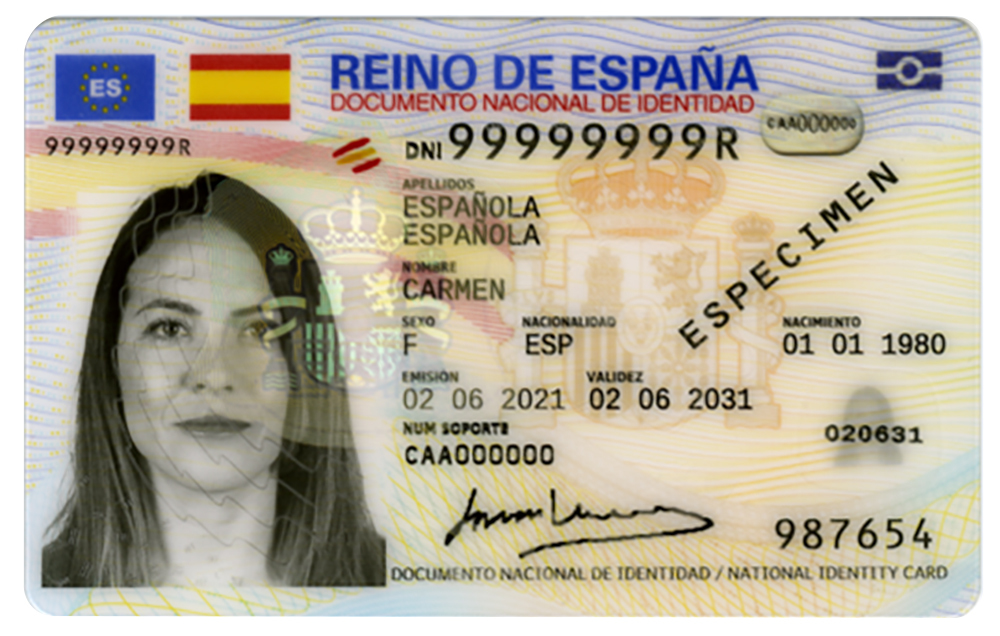
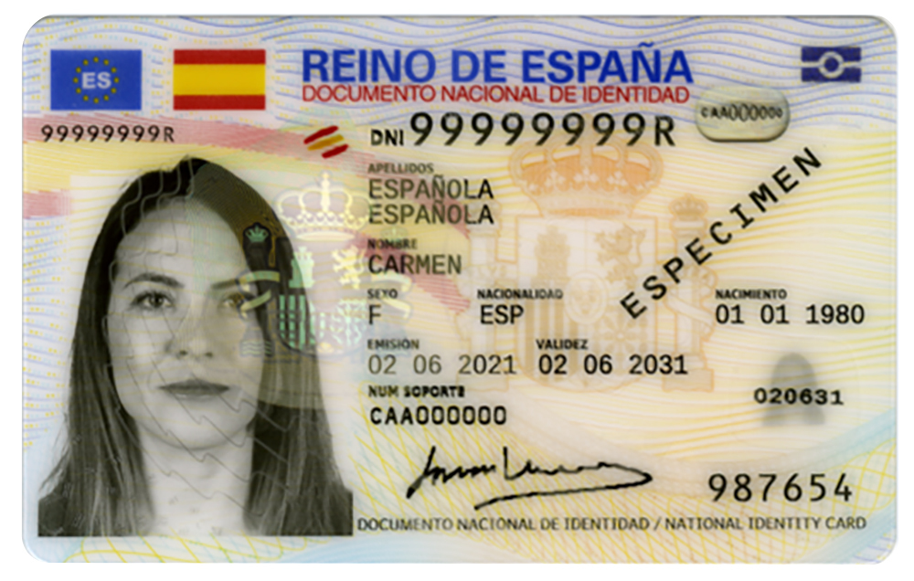

SecurID
Anonymize your documents with ease. A free, open-source tool to redact and watermark images directly in your browser.
 

Ready to Secure Your Documents?
Click the button below to open the editor. No installation or account needed.
Open Editor